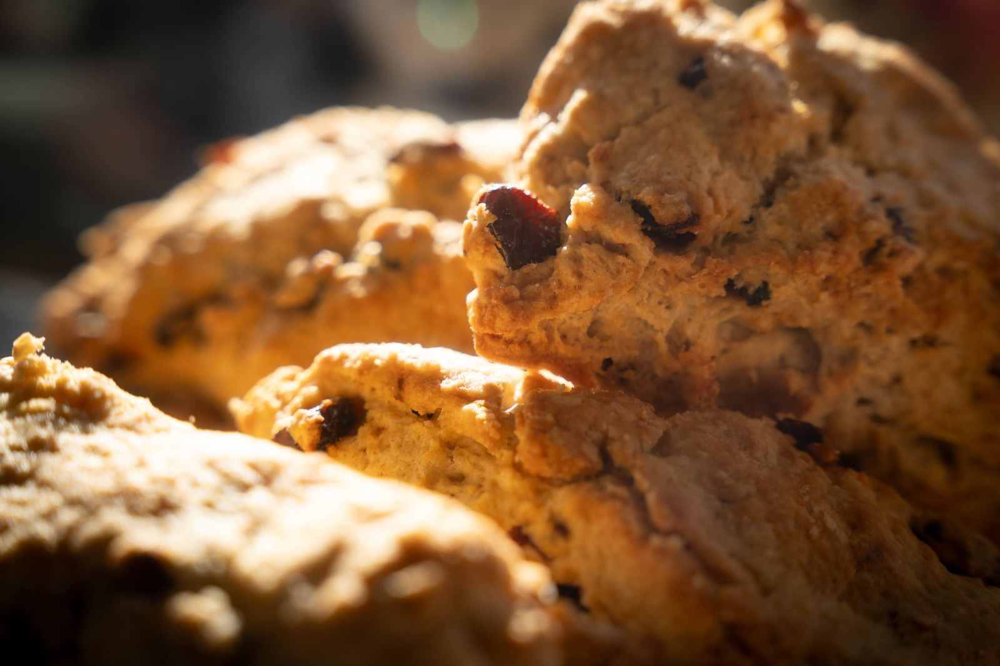

The food case
Morning food, baked fresh
The case next to the espresso machine holds the morning lineup: breakfast sandwiches, three cheese quiche and crustless quiche, scones, muffins, and bagels with house-made spreads. Cookies round out the afternoon.
Feeding a group? The shop puts together catering trays for offices and gatherings. Call ahead and they will have it boxed and ready.
To brew at home, pick up a bag of the locally roasted coffee the shop serves.
On the menu
The regular food lineup. Selections can change, so call if you are coming for something specific.
Breakfast sandwiches
Built for the drive-thru run.
Quiche
Three cheese quiche and crustless quiche.
Scones and muffins
Baked fresh for the morning case.
Bagels
Served with house-made spreads.
Cookies
For the afternoon cup.
Catering trays
Boxed for offices and gatherings. Call ahead.
Retail coffee bags
Locally roasted beans to brew at home.
Takeout and dine-in
Eat in, take it to go, or roll through the drive-thru.